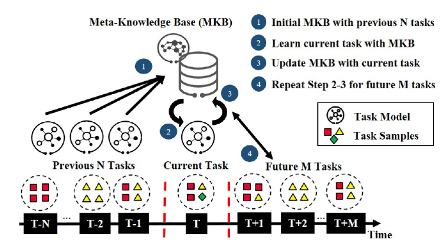

Overview
We present Semantic-Segmentation, a new large-scale dataset that contains a diverse set of stereo video sequences recorded in street scenes from 50 different cities, with high quality pixel-level annotations of 5000 frames in addition to a larger set of 20000 weakly annotated frames. The dataset is thus an order of magnitude larger than similar previous attempts. Details on annotated classes and examples of our annotations are available at this webpage.
The Semantic-Segmentation Dataset is intended for
(1) assessing the performance of vision algorithms for major tasks of semantic urban scene understanding: pixel-level, instance-level, and panoptic semantic labeling;
(2) supporting research that aims to exploit large volumes of (weakly) annotated data, e.g. for training deep neural networks.
Introduction for LifeLong Learning Alogrithm
The current mainstream machine learning paradigm is to run machine learning algorithms on a given set of data to generate a model, and then apply this model to a task in a real environment, which we can call "isolated learning". The main problem with this learning paradigm is that the model does not retain and accumulate previously learned knowledge and cannot use it in future learning, and the learning environment is static and closed, in contrast to the human learning process. In reality, the situation is so varied that it is clearly impossible to label every possible task or to collect large amounts of data before training in order for a machine learning algorithm to learn. Lifelong machine learning was created to address these problems.
Lifelong learning has five key characteristics.
(1) a process of continuous learning.
(2) the accumulation and retention of knowledge in the knowledge base.
(3) the ability to use accumulated learned knowledge to aid future learning
(4) the ability to discover new tasks.
(5) the ability to learn while working.
Relying on the lifelong learning system built by KubeEdge+Sedna+Ianvs distributed collaborative AI joint inference framework, the core task of this project is to complete the unknown task identification algorithm module and embed it in the framework, with the aim of equipping the system with the ability to discover new tasks.
Examples
Some examples in Semantic-Segmentation dataset